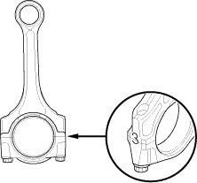

- If the plastigage measures too wide or too narrow, remove the upper half of the bearing, install a new, complete bearing with the same colour code(s), and recheck the clearance. Do not file, shim, or scrape the bearings or the caps to adjust clearance.
- If the plastigage shows the clearance is still incorrect, try the next larger or smaller bearing (the colour listed above or below that one), and check clearance again. If the proper clearance cannot be obtained by using the appropriate larger or smaller bearing, replace the crankshaft and start over.

Rod Bearing Selection
- Inspect each connecting rod for cracks and heat damage.
Connecting Rod Big End Bore Code Locations
- Each rod has a tolerance range from 0 to 0.024 mm (0.0009 in.), in 0.006 mm (0.0002 in.) increments, depending on the size of its big end bore. It's then stamped with a number or bar (1, 2, 3 or 4/l, ll, lll, or llll) indicating the range. You may find any combination of numbers and bars in any engine, (Half the number or bar is stamped on the bearing cap, the other half on the rod).
If you can't read the code because of an accumulation of oil and varnish, do not scrub it with a wire brush or scraper. Clean it only with solvent or detergent.
Normal Bore Size:
51.0 mm (2.01 in.)
